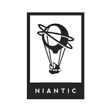
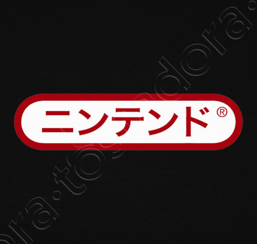

Nianctic y sus nuevas actulizacion en pokemon GOPokémon GO se actualiza constantemente, ya sea para añadir nuevo contenido como para solucionar diversos errores que han surgido, e incluso son muy útiles a la hora de detener a los usuarios tramposos de la comunidad. Hace unas horas, la cuenta oficial de NianticHelp en Twitter informó de un error exclusivo de los dispositivos iOS en su versión 1.85.4 que está causando problemas a la hora de iniciar sesión. Aunque parece que tienen pensado solventarlo en la próxima actualización, por el momento recomiendan reinstalar la aplicación si nos encontramos con este inconveniente. |
Novedades sobre Nintenders
Nintendo y LoveROMs esperan alcanzar un acuerdo sin tener que llegar a los tribunalesComo ya os anunciamos hace 1 mes, Nintendo demandó a las webs LoveROMs y LoveRetro. Ambas páginas, muy conocidas por distribuir miles de ROMs ilegales sobre videojuegos de Nintendo, ya sean de Game Boy, Game Boy Advance, Nintendo DS, etc |
Cyber Gadget presenta este mini soporte de carga para Nintendo Switch
Una vez más, la empresa productora de accesorios Cyber Gadget ha presentado recientemente una base de carga de tamaño reducido para Nintendo Switch. Podría tratarse de una alternativa interesante para los usuarios de la consola. Se trata de una base más pequeña que la base de carga oficial de Nintendo. Sus medidas son 5cm x 5cm x 4.8cm, por lo que nos será muy fácil llevarla en nuestro bolsillo. Además, esta mini plataforma permitirá a los jugadores disfrutar del modo portátil de la consola mientras la cargamos. |